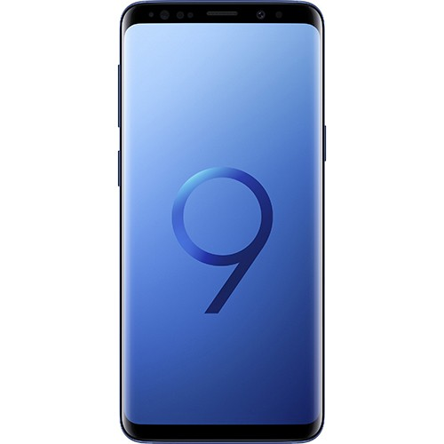

CellphoneS
Trang chủ
Điện thoại
Apple
Samsung

Samsung Galaxy S9 Chính hãng
19.990.000₫
-Thông số kỹ thuật
Hãng sản xuất: Samsung
3G: HSPA 42.2/5.76 Mbps
4G: LTE-A (6CA) Cat18 1200/200 Mbps
Kích thước: 147.6 x 68.7 x 8.4 mm (5.81 x 2.70 x 0.33 in)
Trọng lượng: 163g (5.75 oz)
SIM: 2 SIM (Nano-SIM)
Loại màn hình: Cảm ứng điện dung Super AMOLED, 16 triệu màu
Kích thước màn hình: 5.8 inches
Độ phân giải màn hình: 1440 x 2960 pixels
Hệ điều hành: Android
Phiên bản hệ điều hành: 8.0 (Oreo)
Chipset: Samsung Exynos 9 9810
CPU: 4x 2.9 GHz Exynos M3 Mongoose & 4x 1.9 GHz ARM Cortex-A55
GPU: Mali-G72 MP18
Khe cắm thẻ nhớ: microSD, lên đến 256 GB
Bộ nhớ: 64 GB, 4 GB RAM
Camera sau: 12 MP (f/1.5-2.4, 26mm, 1/2.5", 1.4 µm, Dual Pixel PDAF), tự động lấy nét nhận diện theo giai đoạn, OIS, LED flash
Camera trước: 8 MP, f/1.6, tự động lấy nét, 1440p, gọi video kép, HDR tự động
Quay video: 2160p@60fps, 1080p@60fps, 720p@960fps, HDR, quay video kép
WLAN: Wi-Fi 802.11 a/b/g/n/ac, dual-band, Wi-Fi Direct, hotspot
Bluetooth: 5.0, A2DP, LE, aptX
GPS: A-GPS, GLONASS, BDS, GALILEO
NFC: Yes
Hồng ngoại: No
USB: 3.1, Type-C 1.0
Cảm biến: Mống mắt, vân tay, gia tốc, con quay quy hồi, khoảng cách, la bàn, phong vũ biểu, nhịp tim, SpO2
Pin: Li-ion 3000 mAh